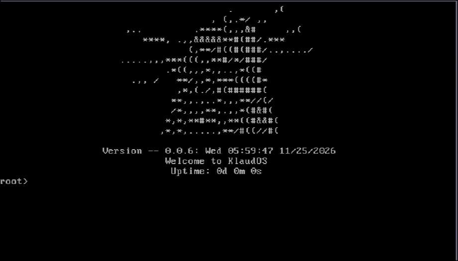
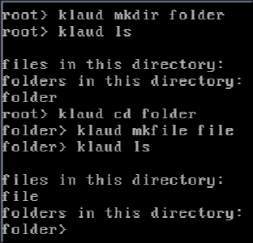
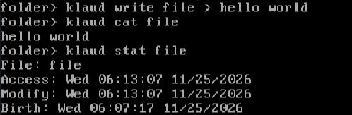
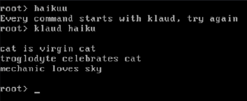
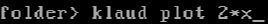
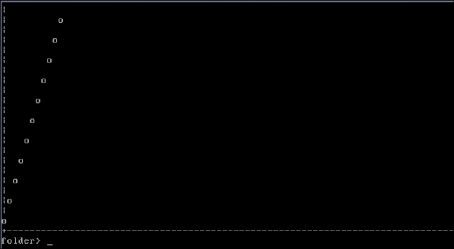
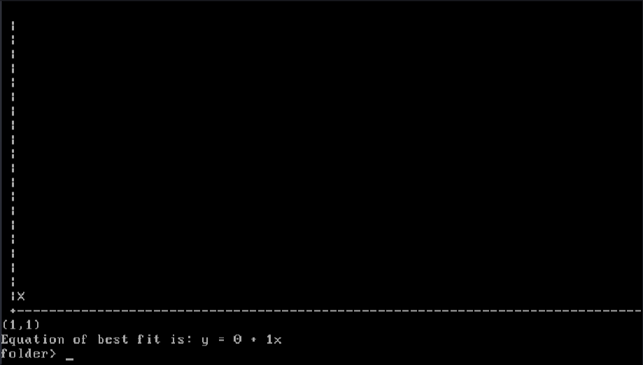

Building KlaudOS
TempleOS was my gateway to Operating Systems programming. I wanted to make my own, but I needed a theme; his was religious, but I needed my own thing. I had done a Star Wars movie marathon, and while watching the sequels, I noticed a slug-like character named Klaud. I loved his story about overcoming his lack of arms to be the Resistance's best engineer. Some have deemed him a “Glup Shitto” but I think real fans remember him. So, I was inspired to make KlaudOS, the first ever Klaud themed Operating System. This OS is meant to fit on a floppy disk (1.47 MB), which is not a lot of space.
Overview
The overall structure of the OS currently is as follows:
- Dual Stage Bootloader
- Stage 1: FAT12 real-mode bootloader
- Stage 2: Loads 32bit protected mode
- Kernel
- Loads interrupts
- user interface
- programs
Building the binary
We use a hierarchical Makefile structure to build the final disk image. First, we need a compiler and binutils installed. The build_toolchain shell file is used for downloading the exact versions (GCC 15.3.0 and Binutils 2.45) of both to make sure everything is compatible. It also makes sure needed packages such as base-devel, gmp, wget, etc are installed as well. Specifically, we are trying to install i686-elf-gcc and i686-elf-ld. i686 indicates that it is for 32bit x86 processors, elf means the binaries will be in the Executable and Linkable Format (ELF), and the lack of OS suffix means that it does not target a specific OS. The GCC one is the compiler, and LD is the linker. The purpose of these tools is to compile code into the form our architecture of choice takes. We can then convert those binaries into a disk image using dd, mkfs.fat, and mcopy. dd makes the floppy with the following command:
dd if=/dev/zero of=$@ bs=512 count=2880
bs is the block size, and count is the number of blocks in the floppy. Multiply both numbers together, and you get 1,474,560 bytes, which is the size of a floppy disk. /dev/zero is a Linux device that outputs endless zeros. So this command literally makes a floppy and floods it with zeros for future filling.
We then use mkfs.fat to make a FAT12 filesystem using the following command:
mkfs.fat -F 12 -n "NBOS" klaudOSv0.0.5.img
The -F 12 means that it is a FAT12 file system, and -n “NBOS” sets the volume label. Now our image has a Boot Sector, FAT table, Root Directory, and Data Area.
Now we can install the bootloader(s) and kernel! We do this with the following commands:
@dd if=$(BUILD_DIR)/stage1.bin of=$@ conv=notrunc >/dev/null
@mcopy -i $@ $(BUILD_DIR)/stage2.bin "::stage2.bin"
@mcopy -i $@ $(BUILD_DIR)/kernel.bin "::kernel.bin"
In the first command, the dd command starts writing the binary of the first bootloader stage to the first 512 bytes of the disk image. The conv=notrunc is important because then the disk image becomes 512 bytes, which we don’t want. We use dd and not mcopy because the BIOS will only look at the 0th sector anyway.
Second command is for copying over the second stage of the bootloader. We can use mcopy now because there should be an understanding of the FAT structure. It's comparable to the following command:
cp stage2.bin /mnt/floppy/
The -i $@ option makes sure it copies to the disk image, and the ::stage2 means that mcopy will put it in the root directory of the FAT file system. This does the same for the kernel binary.
Now our disk image looks like the following:
- Sector 0 (512 bytes)
- Stage 1 bootloader + BIOS Parameter Block
- Sectors 1-1999 (2000 sectors x 512 = 1 MB)
- FAT12 Filesystem
- FAT Table (with backup)
- Data Area: stage2.bin, kernel.bin
- Sectors 2000-2879 (880 sectors x 512 = 450 KB)
- KlaudFS
- SuperBlock + Inode Table
- Data Blocks
You'll notice there are two File Allocation Tables (main and backup), this is because if one got corrupted, the operating system could use the other. This was typical for floppy disks back in the day.
The main Makefile starts the build pipeline; for each stage, there is a makefile that compiles all of the assembly and C code into a binary.
Linker files
The linker file helps tie everything together; it tells our compiler how to format the executable. This is a super important part of building our disk image; without it, code would not be saved to the correct memory addresses and the previous stages wouldn't know where to find the next ones.
For example, this is the linker file for the stage 1 bootloader:
ENTRY(start)
OUTPUT_FORMAT("binary")
phys = 0x7C00;
SECTIONS {
. = phys;
.fsjump : { *(.fsjump) }
.fsheaders : { *(.fsheaders) }
.entry : { __entry_start = .;
*(.entry)
}
.text : { *(.text) }
.data : { *(.data) }
.rodata : { *(.rodata) }
.bios_footer 0x7DFE : { SHORT(0xAA55) }
.bss : { *(.bss) }
}
I'll break the linker file down line by line:
- ENTRY(start): tells the linker that the program begins at the symbol named start
- OUTPUT_FORMAT("binary"): output file will be in the form of a binary
- phys is the memory address where your program's data will physically reside in hardware or storage; here we want it at 0x7C00. More of a variable situation here, though; it will actually be set in the .entry section.
- SECTIONS: Starts the memory layout descriptor
- . = phys: the . symbol is the location counter; it sets the current address, which should be 0x7C00
- The rest of the lines are telling the linker to create the corresponding sections and their contents in the output file.
- .fsjump: Literally just: jmp short start. FAT12 requires the boot sector to begin with a jump instruction. This line literally just jumps to the start section.
- .fsheaders: The BIOS Parameter Block is at the top of the file (under fsjump) and contains bytes per sector, sectors per cluster, etc. Without them, the disk would not look FAT12.
- .entry: creates an output section named .entry, it actually sets the location
- .text: where all of the code resides; will be in any assembly/C linker file
- .data: has initial values of global variables/initialized data; will be in any assembly/C linker file
- .bss: reserved space for uninitialized or zero-initialized data; will be in any assembly/C linker file
Assembly
Let's cover some basic assembly first. Registers are very small, extremely fast storage locations inside the CPU. Unlike RAM, registers are built directly into the processor and are accessed in a single CPU cycle.
General Purpose Registers
| Register | Typical Use |
|---|
| EAX | Accumulator, arithmetic, function return value |
| EBX | Base Register |
| ECX | Counter for loops |
| EDX | Data register, multiplication/division |
| ESI | Source index |
| EDI | Destination index |
| EBP | Base pointer (stack frame) |
| ESP | Stack pointer |
mov eax, 10
mov ebx, 20
add eax, ebx
EAX = 30
EBX = 20
The instruction pointer stores the memory address of the next instruction to be executed. For example:
0x1000 mov eax,5
0x1005 add eax,1
0x1008 ret
Initially, EIP = 0x1000, then, after execution: EIP = 0x1005. The CPU automatically advances EIP unless a jump or call changes it.
Registers are limited (only a handful exist), so programs store most data in RAM. Memory consists of numbered addresses in hex format. You can access memory using brackets:
mov eax, [0x1000]
This loads the value stored at memory address 0x1000 into EAX.
mov eax, 0x1000
The literal value 0x1000 is copied into EAX.
Bootloader - Stage 1
We have already spoken about this stage a bunch; there really isn't much to it. There isn't a ton this small of a program can truly do.
The first thing you'll notice is the BIOS Parameter Block sitting right after the initial jmp/nop. This is because BIOS firmware and any FAT12 driver expect to find this at the start of the boot sector.
16 bit registers can only hold a maximum number of 65,535 (0xFFFF); they can't natively point to a physical memory address higher than 64 Kilobytes. To get around this, x86 uses segmentation. The CS (Code Segment) register points to the start of a 64KB block of memory (a segment) dedicated to your executable code. The IP (Instruction Pointer) register holds the “offset” or the exact number of bytes from the very beginning of that code segment to the current instruction.
The start label is where execution begins. BIOS loads us at 0x7C00, but it doesn't guarantee CS is 0x0000. Some BIOSes jump in as 07C0:0000 instead of 0000:7C00 because x86 16bit real mode uses Segment:Offset addressing where:
$$
\text{Physical Address} = \text{Segment}\times 16+\text{Offset}
$$
There is no strict standard for how motherboard manufacturers write their BIOS. Some systems will execute your bootloader with CS = 0x0000 and IP = 0x7C00, while others will do it with CS = 0x07C0 and IP = 0x0000. If you don't explicitly fix CS, this mismatch could cause a ton of issues. Here is how it is handled in the start label:
; set data segments to 0
mov ax, 0
mov ds, ax ; data segment
mov es, ax ; extra segment
mov ss, ax
mov sp, 0x7C00
push es ; ES was just set to 0, so this pushes 0x0000 onto the stack
push word .after ; Pushes the memory offset of the ".after" label
retf ; Far Return pops the offset address from the top of the stack into IP
; and pops the segment selector from the stack into the CS register
; popping a register is when you retrieve a data value from the stack and place it directly into a register
After that, we start saving drive information; we need this for CHS (Cylinder-head-sector) math, which is used to find data on physical hard disk drives based on their hardware geometry. We can actually get sectors-per-track and head count from BIOS interrupts. After that is done, the bootloader computes where the root directory lives:
$$\text{Reserved Sectors} + (\text{FAT Count} \times \text{sectors per FAT})$$
It also works out how many sectors the root directory itself spans, based on how many directory entries FAT12 allows and how many fit per sector, and rounds up if there's a partial sector. That whole region gets read into a scratch buffer.
Then, we start looking for our stage 2 binary. We look for directory entries, looking for one whose first 11 bytes match STAGE2 BIN (8.3 filename, space-padded). If we hit the entry count without a match, we throw a kernel_not_found_error. If we find it, byte offset 26 in the entry gives us the starting cluster number for stage 2.
The FAT table gets loaded into the same buffer next, since we're done with the root directory listing. Then it's a loop: convert the current cluster number to an LBA (Logical Block Addressing) coordinate, which disk_read will then internally translate into CHS to fetch the data from the disk. We read that sector directly to STAGE2_LOAD_SEGMENT:STAGE2_LOAD_OFFSET (advancing BX by 512 bytes each time), then look up the next cluster in the chain. FAT12 packs two 12-bit entries into three bytes, so that lookup involves the classic cluster * 3 / 2 bit-shift trick. Hit 0x0FF8 or higher and the chain ends; otherwise, we loop back and pull the next cluster.
Once the entire file is in memory, we point DS and ES at STAGE2_LOAD_SEGMENT, restore the boot drive number into DL in case stage 2 needs it, and jmp straight into STAGE2_LOAD_SEGMENT:STAGE2_LOAD_OFFSET to hand over control. (Note that at compile-time, we use assembler directives to pad the binary out to exactly 510 bytes and append the 0xAA55 magic signature so the BIOS recognizes the sector as bootable)
Bootloader - Stage 2
This stage of the bootloader transitions the CPU from 16 bit real mode into 32 bit protected mode, loads the kernel from disk, and prepares the system to hand off execution to the next stage (C entry point).
Real mode limits memory to 1MB and allows any program hardware access. This is useful when an OS is booting so it can initialize hardware, but we need some security in userspace. Not only does Protected mode give us hardware privilege levels (or rings), but it also enables virtual memory, etc.
First thing that happens is executes the code in entry.asm. The execution starts by disabling interrupts (cli) to prevent real-mode BIOS interrupts from firing during the transition. It saves the boot drive index (passed by the BIOS in dl) to memory for later use, and sets up a temporary 16-bit stack.
To enable protected mode, we need to enable the A20 address line, which will allow us to use more than 1MB of memory. A20 is enabled through the keyboard controller. The code sends a command to read the controller's output port, saves that byte, sets bit 1 (value 2, the A20 enable bit), and writes it back. The A20WaitInput and A20WaitOutput helper functions repeatedly check the keyboard controller's status register to ensure the input buffer is empty before writing, and the output buffer is full before reading. This hardware is notoriously slow, so checking these status bits is required to avoid sending commands back-to-back too quickly.
Once A20 is enabled, the code calls LoadGDT, which executes the lgdt instruction to load the Global Descriptor Table register with the address and size of our GDT (which defines our flat 32-bit code and data segments). With the GDT loaded, the code sets the PE (Protection Enable) bit in the cr0 control register. This is the actual switch that activates protected mode.
Immediately after enabling protected mode, the code executes a far jump (jmp dword 08h:.pmode). A far jump is used instead of a near jump because even though the PE bit is set, the CPU's pipeline, prefetch queue, and segment registers still contain legacy real-mode data. The far jump flushes the pipeline and forces the CPU to reload the Code Segment (cs) register with a valid 32-bit protected-mode selector (0x08).
The [bits 32] directive tells the assembler to emit 32-bit instruction encodings from this point forward. Once inside .pmode, the code:
- Initializes the data (ds) and stack (ss) segment registers to the 32-bit data selector (0x10).
- Clears the BSS (uninitialized global variables) section by zeroing out the memory between __bss_start and __end.
- Pushes the saved boot drive ID onto the stack as an argument and calls the external C function start to hand off execution.
After that, the code from main.c is called and executes. Its job is to initialize disk/filesystem access, load the actual kernel binary off disk into memory, optionally set up a graphics framebuffer, and then jump into the kernel. There are other helper files in this directory used for printing to the screen, FAT file system parsing, memory, graphics, etc. The for (;;) at the end creates an infinite loop which keeps the CPU from executing garbage. A CPU executes whatever sequence of memory addresses it is pointed to. It cannot distinguish between legitimate code and uninitialized or empty memory. If a program ends abruptly or memory is uninitialized, the CPU's instruction pointer might wander into empty space, picking up random electronic noise or leftover data and trying to process it.
Kernel
Once the bootloader has done its job, control is handed off to the kernel. Now the kernel initializes the CPU and hardware, sets up the environment the rest of the system will run in, and decides what the user actually sees.
In KlaudOS, the kernel is intentionally minimal. The stage 2 bootloader is responsible for entering protected mode, enabling A20, loading the Global Descriptor Table, and jumping into the kernel entry point. From there, the kernel's first job is to establish a sane execution environment before doing anything fancy. It initializes the data segment and stack, clears the BSS, and prepares the system for the C runtime.
When it is finished, you are greeted with the following screen:

Interrupts
An interrupt or IRQ is a signal sent to the CPU that stops the current program so the system can handle a high-priority event. A button press is an example of this. This is handled using the standard for x86 architecture which includes the use of an IDT and PIC.
An IDT is an Interrupt Descriptor Table which tells the CPU which handler to call for each interrupt number. The PIC or Programmable Interrupt Controller, remaps hardware IRQs to usable CPU interrupt vectors. By default, x86 hardware IRQs 0-7 would map to CPU interrupt vectors 8-15, which overlap with CPU exceptions (divide by zero, page fault, etc.). The PIC remapping redirects:
- IRQs 0-7: CPU interrupts 32-39
- IRQs 8-15: CPU interrupts 40-47
Each IRQ has a handler that reads device data, updates OS state, and acknowledges the interrupt. The OS supports the following handlers (so far):
- Timer interrupt (IRQ 0)
- Keyboard interrupt (IRQ 1)
- Floppy interrupt (IRQ 6)
- RTC interrupt (IRQ 8)
The timer is way more important to the OS than you might think. It is used for random number generation, file metadata, Potential scheduling or timeout mechanisms, etc. KlaudOS configures the Programmable Interval Timer (PIT) to fire at 100 Hz (every 10ms). Each interrupt increments a global ticks counter.
The keyboard basically drives the whole user interface since it's only a terminal at the moment. It handles not only character presses, but it also builds the command line, handles editing, and submits commands to the shell. The interrupt handler accumulates characters until Enter is pressed, then the main kernel loop processes the complete command line.
Disk operations on the floppy are asynchronous. When the kernel initiates a read or write, it issues a command to the floppy controller and then waits. The controller completes the operation in the background and signals completion via IRQ 6 or the floppy interrupt.
The handler simply calls fdc_irq_handler(), which:
- Retrieves the operation result
- Copies data from the controller buffer to kernel memory
- Wakes up any code waiting for disk I/O
Without this interrupt, the kernel would have to poll the floppy controller repeatedly, which wastes CPU time.
The RTC provides a hardware clock synchronized to the system BIOS. The interrupt handler calls rtc_get_datetime() to retrieve the current time and update the kernel's datetime structure.
Klaud Filesystem
FAT12 handles loading the bootloader and kernel; the Klaud Filesystem or KlaudFS, is used for runtime file and directory operations in the kernel. The filesystem is loaded from disk into kernel memory on boot and synced back with syncFS()
- Block Size: 512 bytes (one sector)
- Max Capacity: 880 sectors (~450 KB) on the floppy
- Components:
- SuperBlock: Metadata (num inodes, blocks, dirs, magic number 0x4B4C4144)
- Inode Table: Up to 64 files (each inode tracks size, first block, directory, timestamps)
- Directory Table: Up to 32 folders (tree structure)
- Data Blocks: 100 blocks for file content storage
There are 3 timestamps taken for each file using the Real Time Clock (RTC), the birth time, modify time, and last access time.
Commands for creating directories, files, and navigating them are very similar to Linux:

You can use klaud write to write text to a file, and similarly to Linux, you can use klaud cat to read its contents.

Making Fun Commands
I have spent a ton of my free time coming up with commands, most of them being admittedly stupid. The most important rule is that all commands start with klaud. For example:

I could probably spend an entire other article writing about all of the commands I wrote, but I'll focus on only the math operations because those are by far the most interesting. The klaud math command takes an expression and uses PEMDAS to reduce it. It supports addition, subtraction, multiplication, division, powers, modulo, and factorial.
This is further used in its plotting functionality with klaud plot:

Then the screen clears, and a plot is created:

You can also plot specific points with klaud plot point, which will further give you a line of best fit. You could also use klaud plot point random to plot points at random. You can also add more than one random point at a time by adding a number at the end of the command (i.e., 10 random points: klaud plot point random 10)
For the case of klaud plot point (1,1):

What's Next?
This is a project I have worked on and off for a few years now, and I still have a ton of things I need to get done. The biggest one being paging so I can have proper memory management. Alongside that, being able to scroll in the command line would be a huge improvement. Someday I would like to add some graphical updates; a graphical interface, mouse support, and a text editor would be amazing. Although those are further away.